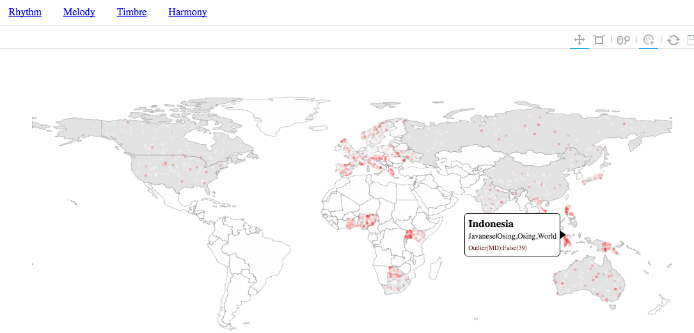
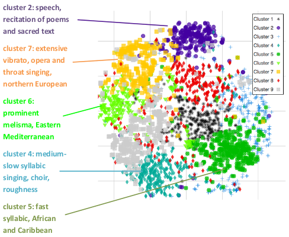
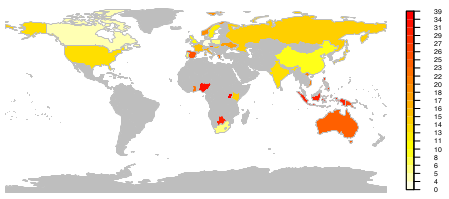

"A large-scale comparison of world music corpora with computational tools". The comparative analysis of world music cultures has been the focus of several ethnomusicological studies in the last century. With the advances of Music Information Retrieval and the increased accessibility of sound archives, large-scale analysis of world music with computational tools is today feasible. We combine music recordings from two archives, the Smithsonian Folkways Recordings and British Library Sound Archive, to create one of the largest world music corpora studied so far (8200 geographically balanced recordings sampled from a total of 70000 recordings). This work was submitted for the 2017 British Library Labs Awards - Research category. Read more here.

"Towards the characterization of singing styles in world music". In this paper we focus on the study of singing styles in world music recordings. We develop a set of contour features capturing pitch structure and melodic embellishments. Using these features we train a binary classifier to distinguish vocal from non-vocal contours and learn a dictionary of singing style elements. We observe singing clusters distinguished by characteristic uses of singing techniques such as vibrato and melisma. Recordings that are clustered together are often from neighbouring countries or exhibit aspects of language and cultural proximity. Explore which parts of the world have similar singing styles in this interactive demo. More details on the study here.

Best student paper award at the 2016 International Society for Music Information Retrieval (ISMIR) conference for the paper "Learning a feature space for similarity in world music". In this study we investigate computational methods for assessing music similarity in world music. We use state-of- the-art audio features to describe musical content in world music recordings and machine learning to learn feature representations for music similarity. Read more here.